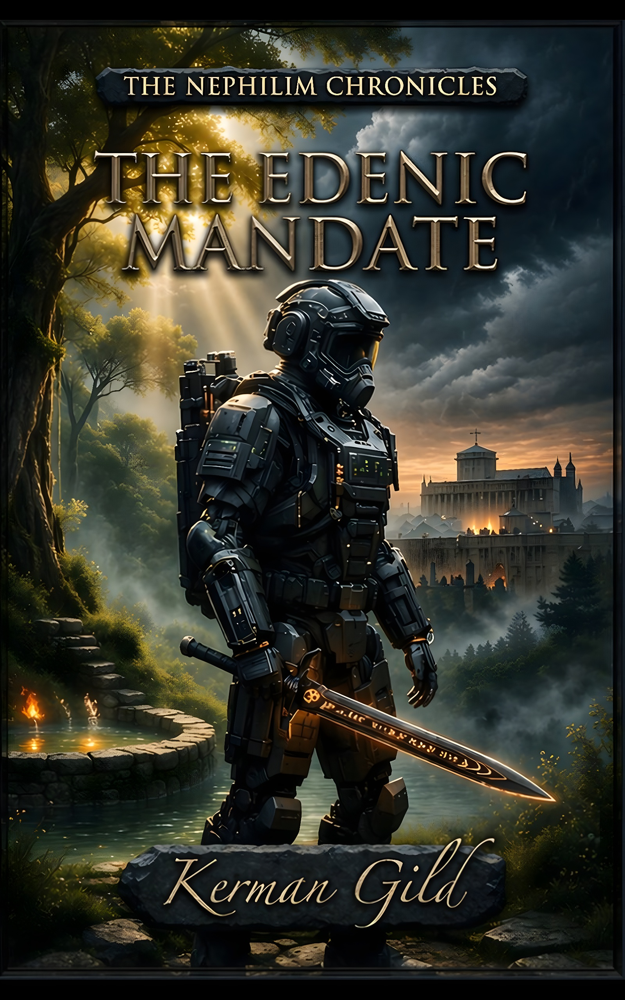

The Two Witnesses are back. Azazel walks free.
The 1,260 days have begun.
Author: Kerman Gild
The Nephilim Chronicles — Book Three
Book 3 of The Nephilim Chronicles
"And I will give power unto my two witnesses, and they shall prophesy a thousand two hundred and threescore days, clothed in sackcloth."
— Revelation 11:3
The seal is broken. Azazel walks free. And on the floor of the United Nations General Assembly, a man who should not exist hands a dying world its miracle — wrapped in Watcher-era molecular geometry.
The Two Witnesses are in Eden. Cian mac Morna has a commission, a baptism, and a sword that is learning to be silent. The archangel who guarded him for twenty-six centuries is about to withdraw. The 1,260 days begin in Jerusalem.
He has never done this without Liaigh. He has also never stopped.
Six weeks after Dudael. The Antarctic prison is breached, Azazel is free, and the world has no framework for what is happening to it. Brennan McNeeve, alone in a signal-hardened room in New Zealand, watches a man who arrived fully-formed from nowhere address the United Nations General Assembly — and recognises the molecular geometry in his miracle cure as Watcher-era acoustic engineering applied to organic chemistry. Dr. Ezra Adon. No prior record. No academic footprint. No history before February. The most credentialed man on the planet, apparently made from scratch.
The markets call him a saviour. The epidemiologists call him a miracle. Brennan calls Cian.
Cian mac Morna is in Eden.
The ancient garden — preserved outside time, untouched by the Flood, sustained by the Tree of Life — holds what all of Cian's centuries of searching finally located. The Two Witnesses: Enoch, the Scribe, who walked with God and was not; and Elijah, the Prophet, taken to heaven in a whirlwind before the first king of Israel drew his second breath. They have been waiting. The hour of their return — the 1,260 days promised in Revelation — has arrived. Cian mac Morna is their Guardian. He was born for this role in 586 BCE and has been in transit toward it ever since.
He is also about to be alone in a way he has never been before.
Raphael — the archangel Cian has called Liaigh for twenty-six centuries — is withdrawing. The operational silence is not abandonment. It is strategic: the next phase requires Cian to carry the Witnesses through hostile territory with no supernatural compass, armed only with what he has learned and what he carries. Before the channel closes, Raphael meets him one last time. What is said in that conversation is the theological weight-bearing moment of the entire series. And when the silence falls, it falls completely.
In the three Brennan interludes woven between the Eden chapters, the world outside is deteriorating at Azazel's pace. The Mark System goes live. The Philadelphian resistance network that Brennan has been building runs its first major casualty. The Beast — Ohya, son of Shemyaza — moves toward manifestation. The 1,260 days are a countdown in both directions: toward the Witnesses' public ministry and toward the totalitarian endgame designed to destroy it.
By the time Cian leads Enoch and Elijah out of Eden and into the streets of Jerusalem, he is not the same man who entered. He has been baptised — not by water but by fire, literally, and by the grace that Dismas showed him was never about the earning. He has been commissioned not merely as a hunter of abominations but as Guardian of the Testimony that will divide the world in half.
Mo Chrá will be silent when he needs her most. The archangel will not answer. The Two Witnesses will prophesy and be hated and refuse to stop. And Cian mac Morna — constitutionally incapable of following orders he disagrees with, carrying a sword that has known him for 2,636 years — will guard them. Because he has never disagreed with this one.
THE EDENIC MANDATE is the third volume in The Nephilim Chronicles — a five-book biblical apocalyptic thriller drawing on 1 Enoch, the Book of Jubilees, and the prophecies of Revelation. For readers of Frank Peretti, Joel C. Rosenberg, and anyone who ever wondered what it would actually cost to stand between the Two Witnesses and the world that wants them dead.
The Guardian
Celtic warrior of the Fianna, now 2,638 years old. Twenty-six centuries of Nephilim hunting were preparation for a commission he only fully understands in Book Three. His primary arc is the hardest: accepting vocation over will. The archangel he has argued with for millennia is about to go silent. What remains is a man, a sword, two Witnesses, and the God who planned this from before the Flood.
The Departing Archangel
Present in Book Three primarily through his absence — which is a more devastating presence than any previous appearance. Before the operational silence falls completely, he meets Cian once more. What is said between them in "The Threshold" is the most significant conversation in the series. The channel closes. The silence is complete. And Cian walks forward.
The Scribe, The First Witness
He walked with God and was not — translated before death, preserved in Eden for this hour. The keeper of the Empyreal Register: the celestial database documenting every angelic and demonic deed since the creation. He is not a warrior. He is a recorder. His testimony in Jerusalem will be the read-aloud indictment of everything the Harlot Network has built over five millennia.
The Prophet, The Second Witness
Taken to heaven in a whirlwind, preserved for 2,800 years for the hour of his return. He tests Cian in Chapter Seven — not for kinetic skill but for willingness to be tested. His theological conversations establish the series' final hermeneutic: that God's will and human will must be integrated, not conquered. He is Cian's mirror: immortal, like him, but formed by covenant rather than by solitude.
The Guardian's Second
Her primary arc in Book Three is the removal of operational camouflage — the FININT professionalism that has kept her functional for twenty years. Her trauma resurfaces through the encounter with Dismas, who ministers to her survivor's guilt through the lens of unearned grace. By the baptism scene, her operational term "Operational Affection" has become the series' most precise description of what humans actually are beneath their armour. She enters Jerusalem fractured and welded back — which is not the same as healed.
The Engineer, Cian's Nephew
Three interludes, three escalations. While Cian is being spiritually reforged in Eden, Brennan is watching the apparatus of global totalitarianism come online — the Mark System, the Philadelphian resistance, the first martyrdom of a cell he built. His role in Book Three establishes the stakes that Cian does not see: the world outside Eden is dying at Azazel's pace. His final transmission to Jerusalem is four words: "Position secure." It carries the weight of lives spent.
The Grace-Bearer
Enters in Chapter Nine as an unnamed figure in Eden — teaching theological truth from the margins of the garden. His identity as the penitent thief from Calvary is not revealed until the baptism scene. He is the theological centerpiece of the entire series: the living answer to Cian's 2,600-year struggle of earning salvation through faithfulness. He died on a cross with no righteous works and received Paradise in his dying breath. Grace does not operate in the economy of merit. By the epilogue, he kneels in prayer vigil for the entire 1,260-day ministry.
The False Prophet (Azazel)
Forty-three years old. No prior public record. No academic footprint. No history before February 2028. He arrives at the United Nations General Assembly with a cure for a hemorrhagic virus that has killed 4.2 million people — a molecular synthesis protocol embedded with Watcher-era acoustic geometry that no terrestrial laboratory has ever documented. The world calls him a saviour. Brennan recognises the bond angles. The name "Ezra Adon" is the most elegant misdirection in the series.
The Sword, "Pulse of My Heart"
Her relationship to Cian deepens in Book Three precisely because the operational silence constrains her. She becomes witness to his solitude and, paradoxically, part of the apparatus that enforces it. By the epilogue their roles have inverted: she carries him forward where he cannot carry himself. She has known him for 2,638 years. She does not abandon her Guardian. She adapts — as she always has.
Stewart Island, New Zealand. March 14, 2028. Brennan McNeeve watches Dr. Ezra Adon hand the United Nations a miracle — a complete cure for the hemorrhagic virus that has killed 4.2 million in six weeks, donated without conditions to every nation on Earth. The General Assembly rises before he reaches the podium. The markets surge. Brennan pulls the synthesis protocol onto his molecular modelling suite and finds bond angles that cannot exist in terrestrial chemistry. He has seen them before. On the hilt of Cian's sword.
Stewart Island. The team processes the world that has emerged from Dudael's breach. The Mark System's first architecture is visible in Brennan's feeds. Naamah's Thirteen Houses are consolidating. The Philadelphian resistance network Brennan has been quietly building is real but thin. Cian receives the bearing that will take him into Eden — and the intelligence that Dr. Ezra Adon has filed an application for a permanent seat on the UN Security Council.
Marcus breaks down the acoustic signature embedded in Adon's molecular cure — it is not merely Watcher-era geometry. It is a specific resonance frequency that the team has encountered before: the harmonic signature of Gadreel's domain from the Dudael readings. The False Prophet has announced himself with his first miracle, and only the team in a signal-hardened basement in New Zealand has the context to recognise what he is.
The route to Eden requires a cartographic key that exists in exactly one place — a pre-Flood celestial survey embedded in the Empyreal Register. Enoch holds it. Elijah knows the direction. Cian has the sword that opens what no mortal key can reach. The chapter maps the approach: the terrain, the supernatural wards, the theological protocols that govern entry into the preserved garden. This is not an infiltration. It is a presentation.
The approach to Eden is not unopposed. House Tamiel has been tracking Cian's bearing since Dudael. The chapter is a corridor engagement — Cian, a depleted sword, and Miriam against the most sophisticated Nephilim-blooded operatives Naamah's network can field. What makes it different from every prior engagement: Mo Chrá is learning to conserve, to function on partial capacity, to fight differently. What she cannot do is stop fighting. Neither can he.
Inside Eden. The garden that time did not reach. Cian meets Enoch first — the Scribe, older than any living memory, carrying the celestial database of every angelic and demonic deed since creation. The theological architecture of what Enoch carries is established: the Empyreal Register is not a weapon. It is a testimony. Its deployment in Jerusalem will not be a military operation. It will be a reading. James and Marcus establish the logistical framework for moving two ancient prophets through a hostile twenty-first century world.
Eden's defences are not passive. The garden is warded by celestial acoustics that respond to the Nephilim-frequency in Naamah's surveillance network — when her assets probe the perimeter, what comes back is not silence. It is a harmonic response that Brennan's analytical suite, three thousand miles away, records as the highest-amplitude acoustic event since the Dudael breach. The enemy now knows where Cian is. They cannot reach him. This is a temporary condition.
Elijah tests Cian — not for skill or tactics, but for willingness to be tested. The examination is theological: Cian is asked to articulate what he believes about the God he has served for twenty-six centuries, through wars he did not choose, losses he could not prevent, centuries of carrying what could not be changed. His answer is not fluent. It is not tidy. It is honest in a way that stops the prophet cold. Elijah says four words that Cian will think about for the rest of the book. The reader will understand them. Cian will, eventually.
Brennan's first POV chapter while Cian is in Eden. The Mark System's voluntary adoption phase has achieved 340 million registered users in eleven weeks. Dr. Ezra Adon's second public appearance — a trilateral economic summit in Geneva — produces a global trade framework that makes participation in his system economically rational for every nation above subsistence GDP. The Philadelphian network receives its first formal communication from the Josephite command: the window for above-ground operation is closing. Brennan begins to understand what Cian's mission actually costs.
In the margins of Eden, Cian encounters a figure who teaches from the edge of the garden — quietly, without authority, to no one in particular. His theology is simple, precise, and devastating: grace is not the reward for faithfulness. It is the gift given to the faithless who admit it. Cian does not know who this man is. Miriam does not know. The reader is given one deliberate clue, laid with care. It is the most important chapter in the series, and it arrives without announcement.
Elijah baptises Cian mac Morna in the waters of Eden. What should be the completion of a 2,600-year theological arc lands differently: the ceremony is witnessed by the man from Chapter Nine, whose identity is now revealed. Dismas — the penitent thief from Calvary, translated to Eden on the word of Christ himself, carrying no righteousness but the grace given in a dying moment. Miriam is baptised beside Cian. Her operational terminology, stripped away in the water, reveals the woman she has been protecting herself from becoming. "Operational Affection." It is the most precise thing she has ever said.
Brennan's second interlude. The Josephite cell in São Paulo — eight operators, three engineers, a logistics network that took fourteen months to build — is burned. Not captured. Not compromised. Burned: systematically, surgically, over forty-eight hours by a Naamah-network asset who appears to have had access to Brennan's encrypted communications. He has not been breached. The asset is prescient in a way that is not human. James tells Brennan what Cian told James, years ago: some things you carry. You don't put them down. You just walk further.
The full team convenes in Eden — Cian, Miriam, James, Marcus, and the Two Witnesses — for the operational briefing that will govern the 1,260-day ministry. Enoch presents the Empyreal Register framework: the testimony is not editorial. It is documentary. Every accusation the Witnesses make in Jerusalem will be on record in the celestial database, verified, irrefutable. Elijah presents the tactical reality: the Witnesses will be killed, eventually, by the Beast. This is scheduled. This is not a failure of the protection plan. This is the plan. Cian's job is not to prevent their death. It is to make their 1,260 days count.
Brennan's third and final interlude. The Mark System's mandatory adoption phase is announced. The UN Security Council votes 14-1 to grant Dr. Adon's framework body permanent observer status. The Philadelphian resistance has three months before the biometric integration makes surface movement impossible for anyone without the Mark. Brennan compresses the entire network into hardened cells with pre-positioned supplies and communications windows. He sends the summary to Cian in Eden as a single encrypted transmission. Four words: "Position secure. Moving deep." James stands behind him and says nothing. That is sufficient.
Raphael requests a private conversation with Cian in the garden before the departure for Jerusalem. He explains the operational silence — not as withdrawal, not as punishment, but as tactical necessity: the next phase requires Cian to operate as a human, carrying only what a human carries, protecting beings that the enemy cannot be permitted to track through supernatural resonance. The channel between them will close. It will not reopen until the end. What they say to each other in that conversation — the last real exchange between the guardian and the Archangel who has guided him for twenty-six centuries — is the most significant moment in the series. The silence that follows is not absence. It is the sound of Cian mac Morna walking forward alone, which he has been preparing to do since 586 BCE.
The 1,260 days begin. Cian leads the Two Witnesses into Jerusalem in the early morning — not with banners, not with announcement, but on foot through the Dung Gate, as he once led an Israelite princess away from a burning city and received a sword and a commission he has been fulfilling ever since. Enoch and Elijah take their position. The testimony begins. The world, which was told this was coming, discovers that it has no framework for the reality of it. Mo Chrá hums for the first time since the baptism — a sound she makes when Cian is exactly where he is supposed to be. He has learned, by now, not to find that irritating.
Three movements. The first: Azazel — Dr. Ezra Adon — alone in his operations centre, watching the Jerusalem feeds with the particular attention of something ancient watching a door it was warned about. The second: Dismas in Eden, kneeling in vigil, his prayer a running thread through the entire 1,260 days ahead. The third: Raphael — deployed, fighting, silent — seen for one moment from a vantage that only the reader occupies, carrying out the work that Cian cannot see and cannot be told about, as he has been doing since before the Fall of Jerusalem.